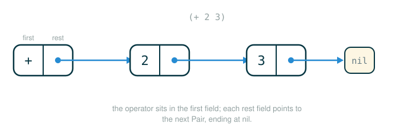

3.4.2 Expression Trees as Pair Data
In the previous lesson you met the Calculator language as text: strings like (* (+ 1 2) (+ 2 3)) that a person types. By the end of this lesson you will be able to do four things: explain why an interpreter cannot work directly on that text, represent a Calculator expression as a tree built from a small Python class called Pair, read a chain of Pair objects the way the machine reads it (by following pointers), and pull the operator and operands back out of an expression tree.
This is the hinge of the whole chapter. Until now, "expression tree" has been a picture you drew to explain how evaluation works. Here it becomes real data inside a running Python program. Once a program is data, ordinary Python functions can take it apart and evaluate it, which is exactly what the rest of the chapter does.
From Written Request to Tree
Think back to diagramming a sentence in English class. The sentence is written on one flat line, but the diagram lifts it into a shape that shows which words play which roles: which is the verb, which is the subject, which clause hangs off which.
A Calculator expression works the same way. The text:
(* (+ 1 2) (+ 2 3))has a tree-shaped meaning:
*
/ \
+ +
/ \ / \
1 2 2 3The root of the tree is the outer operator, *. Its two branches are the two operand expressions, and each branch is itself a smaller expression tree. The numbers at the very bottom, where the tree stops branching, are the leaves.
The interpreter cannot reason about the flat string very easily, because in the string the grouping is implied by parentheses that it would have to scan character by character. The tree makes the grouping explicit: it states, as structure, which pieces belong together. Our job in this lesson is to build that structure as data Python can hold.
Why Trees Fit Combinations
Recall the shape of every Calculator combination:
(operator operand-1 operand-2 ... operand-n)The operator controls what kind of computation happens. The operands are the inputs to that computation. The official text states the rule precisely: a primitive expression is just a number or a string in Calculator (an int, a float, or an operator symbol), and every combined expression is a call expression. A call expression is a Scheme list whose first element is the operator, followed by zero or more operand expressions. (We will see exactly what a "Scheme list" is as data in the next section, when we meet the Pair class.)
The key word is that an operand can itself be a call expression. When it is, that operand becomes a subtree. That is why nested expressions naturally form trees rather than flat lists.
For example:
(/ 40 (* 4 5))has this structure:
/
/ \
40 *
/ \
4 5The interpreter must evaluate the right branch (* 4 5) before it can finish the outer division. The tree shape is what tells it that 4 and 5 belong to the * and not to the /.
Pairs as the Interpreter's Building Blocks
To hold these trees in Python, the official text uses a class called Pair together with a special empty-list value called nil. In Scheme, lists are built out of nested pairs, and the Pair class is Scheme's pair represented in Python. It is similar to the Rlist class from earlier in the chapter, which also stored one element plus a reference to the rest of the list.
Think of a Pair as a two-compartment box:
[ first | second ]For a Scheme-style list, the first field holds one element and the second field holds the rest of the list. To represent a list of several elements, you chain boxes: each box's second points to the next box, and the last box's second is nil.
Pair(1, Pair(2, Pair(3, nil)))
[1 | rest] -> [2 | rest] -> [3 | nil]This chain represents the Scheme list:
(1 2 3)The empty list is the object nil, which is the single instance of a class also named nil. There is only ever one nil; it is the marker that means "there are no more elements." When a Pair chain ends in nil, it is a well-formed list.
The Official Pair and nil Implementation
Here is the implementation exactly as it appears in the Calculator example file scheme_reader. This is Python: it is part of the interpreter machinery you are building. Read the docstring at the top first; those >>> lines are the behavior we are about to walk through.
# (1)
class Pair(object):
"""A pair has two instance attributes: first and second. For a Pair to be
a well-formed list, second is either a well-formed list or nil. Some
methods only apply to well-formed lists.
>>> s = Pair(1, Pair(2, nil))
>>> s
Pair(1, Pair(2, nil))
>>> print(s)
(1 2)
>>> len(s)
2
>>> s[1]
2
>>> print(s.map(lambda x: x+4))
(5 6)
"""
def __init__(self, first, second):
self.first = first
self.second = second
def __repr__(self):
return "Pair({0}, {1})".format(repr(self.first), repr(self.second))
def __str__(self):
s = "(" + str(self.first)
second = self.second
while isinstance(second, Pair):
s += " " + str(second.first)
second = second.second
if second is not nil:
s += " . " + str(second)
return s + ")"
def __len__(self):
n, second = 1, self.second
while isinstance(second, Pair):
n += 1
second = second.second
if second is not nil:
raise TypeError("length attempted on improper list")
return n
def __getitem__(self, k):
if k < 0:
raise IndexError("negative index into list")
y = self
for _ in range(k):
if y.second is nil:
raise IndexError("list index out of bounds")
elif not isinstance(y.second, Pair):
raise TypeError("ill-formed list")
y = y.second
return y.first
def map(self, fn):
"""Return a Scheme list after mapping Python function FN to SELF."""
mapped = fn(self.first)
if self.second is nil or isinstance(self.second, Pair):
return Pair(mapped, self.second.map(fn))
else:
raise TypeError("ill-formed list")
class nil(object):
"""The empty list"""
def __repr__(self):
return "nil"
def __str__(self):
return "()"
def __len__(self):
return 0
def __getitem__(self, k):
if k < 0:
raise IndexError("negative index into list")
raise IndexError("list index out of bounds")
def map(self, fn):
return self
nil = nil() # Assignment hides the nil class; there is only one instance
That last line is worth a pause. The name nil first refers to the class, and then nil = nil() rebinds the same name to a single instance of that class. After that line runs, nil is the one empty-list object, and the class itself is no longer reachable by name. That is deliberate: the design wants exactly one nil.
The Pair and nil objects are Scheme values represented in Python. Each one carries two different text views, and the difference between them matters for the rest of this lesson:
- Its
reprstring is a Python expression: it shows how you would construct the object in Python. - Its
strstring is a Scheme expression: it shows the value the way it would be written in Scheme.
The Anatomy of a Pair Construction
Before reading transcripts, slow down on a single line of construction and read it one token at a time, the way Python does. Python does not see the whole nested shape at once; it works left to right, and the inner Pair calls are evaluated before the outer one can be built.
# (2)
Pair(1, Pair(2, nil))
Pair(1, Pair(2, nil))
├─ Pair ............ the class; calling it builds a new Pair object
├─ ( ............... begins the constructor's arguments
├─ 1 ............... becomes the first field of the outer pair
├─ , ............... separates the two arguments to the constructor
├─ Pair(2, nil) .... becomes the second field: the rest of the list
├─ ) ............... ends the constructor's arguments
└─ evaluates to Pair(1, Pair(2, nil)), the list (1 2)Each Pair stores one item in first and a pointer to the rest of the list in second. Build that mental image now, because every transcript below is just this picture inspected from different angles.
Reading the Pair: the Two Views and the Sequence Interface
Construct the two-element list and look at how it reports itself. This is the official transcript, run at the Python interactive prompt:
>>> s = Pair(1, Pair(2, nil))
>>> s
Pair(1, Pair(2, nil))
>>> print(s)
(1 2)Typing s alone shows the repr view, Pair(1, Pair(2, nil)), which is the Python construction. Calling print(s) shows the str view, (1 2), which is the Scheme list. Same object, two faces: one for the machine, one closer to how a person reads Scheme.
A Pair chain also behaves like a Python sequence. It supports length and element selection, and it offers a map method that returns a new Scheme list:
>>> len(s)
2
>>> s[1]
2
>>> print(s.map(lambda x: x+4))
(5 6)len(s) is 2 because the chain holds two elements before reaching nil. s[1] is 2 because indexing is zero-based: index 0 would be the first, 1, and index 1 walks one link forward to the element 2. The call s.map(lambda x: x+4) builds a brand-new list by adding 4 to every element, giving (5 6); it does not change s.
The important point is not these particular numbers. It is that a single Pair chain quietly supports several things an interpreter needs:
- exact construction view with
repr - readable Scheme-style display with
str - sequence length with
len - element selection with indexing
- applying a function across every element with
map
Representing a Calculator Expression
Now point the same machinery at Calculator code instead of plain numbers. The lesson's running expression family used (+ ...), so start with a warm-up bridge before the official nested example.
The Calculator expression:
(+ 2 3)can be represented as:
# (3)
Pair('+', Pair(2, Pair(3, nil)))
The first item is the operator, '+'. The remaining items, 2 and 3, are the operands. Printing this with str gives back the Scheme expression (+ 2 3), while its repr is the construction Pair('+', Pair(2, Pair(3, nil))). Both views describe the same data: the first reads naturally, the second is what Python builds and inspects.
The box-and-pointer diagram below shows how these chained Pair objects sit in memory, each box pointing to the rest of the list.

Because the operator sits in first and the operand list sits in second, you can reach any part by following fields. Walking this warm-up by hand:
exp.firstis'+', the operator at the root.exp.secondisPair(2, Pair(3, nil)), the operand list.exp.second.firstis2, the first operand.exp.second.second.firstis3, the second operand.
That field-following is the whole reason an evaluator can separate "what operation?" from "what inputs?" without guessing. It never parses the string again; it follows pointers.
Nested Lists: Expression Trees Inside Expression Trees
Nested pairs can represent lists, and the elements of a list can themselves be lists. That single fact is what makes Pair sufficient to represent any Scheme expression: expressions are nothing more than nested lists. When an operand is itself a combination, its slot in the chain simply holds another Pair instead of a number.
Here is the official nested example, run at the Python prompt. The expression is (+ (* 3 4) 5): an addition whose first operand is the product (* 3 4) and whose second operand is the number 5.
>>> expr = Pair('+', Pair(Pair('*', Pair(3, Pair(4, nil))), Pair(5, nil)))
>>> print(expr)
(+ (* 3 4) 5)
>>> print(expr.second.first)
(* 3 4)
>>> expr.second.first.second.first
3The repr of expr is a long line, and that is the point: it shows the exact Python object structure, with no friendliness added. The str view, (+ (* 3 4) 5), is what a person reads. The two field accesses show the machine view:
expr.second -> the operand list of +
expr.second.first -> the first operand, (* 3 4)
expr.second.first.second -> the operand list of (* 3 4)
expr.second.first.second.first -> the first operand of (* 3 4), which is 3The access path expr.second.first.second.first looks long, but it is just pointer following, one link at a time. This is why expression trees are powerful: the evaluator can move through the tree link by link and always know whether it is looking at an operator, an operand list, or a smaller expression. This example demonstrates that all Calculator expressions are nested Scheme lists.
The tree view of the same expression is much easier on the eyes than the repr:
+
/ \
* 5
/ \
3 4The interpreter's plan, set up by this lesson, is exactly: read in nested Scheme lists, convert them into expression trees represented as nested Pair instances, and then evaluate those trees to produce values. The reading step is the next lesson (parsing); the evaluating step is the lesson after that.
Now close the loop on the expression this lesson opened with. The very first text you saw was (* (+ 1 2) (+ 2 3)), drawn as a tree. Here it is as real data: a multiplication whose first operand is the sum (+ 1 2) and whose second operand is the sum (+ 2 3). Both operands are combinations, so both slots in the operand list hold another Pair instead of a number.
# (4)
whole = Pair('*', Pair(Pair('+', Pair(1, Pair(2, nil))), Pair(Pair('+', Pair(2, Pair(3, nil))), nil)))
print(whole)
print(whole.second.first)
print(whole.second.second.first)
Expected output:
(* (+ 1 2) (+ 2 3))
(+ 1 2)
(+ 2 3)The repr of whole is a long nest of Pair(...) calls, but its str view prints back exactly the opening text, (* (+ 1 2) (+ 2 3)). The operator '*' sits in whole.first. The operand list sits in whole.second, and each operand is itself an expression tree: whole.second.first is the subtree (+ 1 2) and whole.second.second.first is the subtree (+ 2 3). To reach a leaf, keep following fields one link at a time:
whole -> Pair('*', ...)
whole.second -> the operand list of *
whole.second.first -> the first operand, (+ 1 2)
whole.second.first.second.first -> the first operand of (+ 1 2), which is 1The picture from the opening of the lesson is now data Python can hold, and every node in it is a Pair the evaluator can walk to without ever re-reading the text.
Accessing Parts of an Expression
Because Pair supports both length and indexing, the interpreter can ask precise questions about a tree's structure using ordinary Python. Build a nested expression and pull it apart:
# (5)
expr = Pair('+', Pair(Pair('*', Pair(3, Pair(4, nil))), Pair(5, nil)))
operator = expr.first
operands = expr.second
first_operand = operands[0]
second_operand = operands[1]
print(operator)
print(first_operand)
print(second_operand)
Expected output:
+
(* 3 4)
5The operator comes from first. The operand list comes from second. Indexing into that list selects individual operands: operands[0] is the subtree (* 3 4), and operands[1] is the number 5. This is the bridge from "program as text" to "program as data": once the program is a Pair tree, plain Python expressions can inspect and process it.
Mapping Over the Operand List
The map method applies a function to every element of a Scheme list and returns a new Scheme list. For a list of numbers it is easy to see:
# (6)
numbers = Pair(1, Pair(2, Pair(3, nil)))
squares = numbers.map(lambda x: x * x)
print(squares)
Expected output:
(1 4 9)This matters for interpreters because the operands of a combination almost always need the same operation applied to each of them. To evaluate (+ (* 3 4) 5), the evaluator will map an evaluation function over the operand list ((* 3 4) 5), turning each operand into its value before the operator is applied. You will see this exact use of map in the evaluation lesson; for now, notice that Pair.map is the tool that makes "do this to every operand" a single call.
Step-by-Step: Building and Reading the Nested Tree
To make the machine model concrete, trace how expr = Pair('+', Pair(Pair('*', Pair(3, Pair(4, nil))), Pair(5, nil))) comes together and how a field access then walks back through it. Python builds the innermost pairs first:
Step 1 Pair(4, nil) the one-element list (4)
Step 2 Pair(3, Pair(4, nil)) the list (3 4)
Step 3 Pair('*', <list (3 4)>) the subtree (* 3 4)
Step 4 Pair(5, nil) the one-element list (5)
Step 5 Pair(<subtree (* 3 4)>, <list (5)>) the operand list ((* 3 4) 5)
Step 6 Pair('+', <operand list>) the whole tree (+ (* 3 4) 5)Now read expr.second.first.second.first left to right, each dot taking exactly one step:
expr -> Pair('+', ...)
expr.second -> Pair(Pair('*', ...), Pair(5, nil)) the operands of +
expr.second.first -> Pair('*', Pair(3, Pair(4, nil))) the operand (* 3 4)
expr.second.first.second -> Pair(3, Pair(4, nil)) the operands of *
expr.second.first.second.first -> 3 the first operand of *No string parsing happens anywhere in this trace. Every step is a single attribute lookup on a Pair object. That is the entire reason an interpreter can treat a program as data.
⚠Common Beginner Traps
When a student first meets Pair, the confusion is almost always one of these:
- Thinking
Pairis the same as a Python list. It is a custom object withfirstandsecondfields. It can behave like a sequence (length, indexing,map), but it is not Python's built-inlist, so reaching for a list method such as.appendraisesAttributeError: 'Pair' object has no attribute 'append'. - Forgetting the final
nil. Withoutnilterminating the chain, the structure is not a well-formed list, and methods like__len__raiseTypeError: length attempted on improper listinstead of returning a length. - Confusing
reprandstr. Thereprview is a Python construction such asPair('+', Pair(2, Pair(3, nil))). Thestrview is the Scheme expression such as(+ 2 3). Typing the name showsrepr; callingprintshowsstr. - Thinking a nested expression is stored as a string. The operand
(* 3 4)inside(+ (* 3 4) 5)is aPairobject, not the text"(* 3 4)". The parentheses you see in thestrview are produced by__str__, not stored. - Losing the operator/operands split. For any combination,
exp.firstis the operator andexp.secondis the operand list. Reaching forexp.firstwhen you want an operand, orexp.secondwhen you want the operator, is the most common slip; it raises no error but silently hands back the wrong piece, soexp.firstgives you the operator symbol such as'+'exactly where you expected an operand.
✓Check Your Understanding
- What does
nilrepresent in aPairchain, and how manynilobjects exist? - Let
t = Pair('*', Pair(Pair('-', Pair(6, Pair(2, nil))), Pair(5, nil))). What ist.first, and what doeslen(t.second)return? - What does the
reprview show that thestrview hides, and which one doesprintproduce? - In the official expression
Pair('+', Pair(Pair('*', Pair(3, Pair(4, nil))), Pair(5, nil))), what doesexpr.second.firstevaluate to, and what doesexpr.second.first.second.firstevaluate to? - Why will an evaluator want to call
mapover the operand list?
Show the answers
nilrepresents the empty list, the end of the chain after which there are no more pairs. There is only onenilinstance; the assignmentnil = nil()guarantees a single object.t.firstis'*', the operator at the root.len(t.second)returns2, because the operand list holds two elements: the subtree(- 6 2)and the number5.- The
reprview shows the Python construction of the nestedPairobjects; thestrview hides that and shows the Scheme expression instead.printproduces thestrview. expr.second.firstevaluates toPair('*', Pair(3, Pair(4, nil))), which prints as(* 3 4).expr.second.first.second.firstevaluates to3, the first operand of that inner product.- The evaluator must evaluate every operand before applying the operator. Mapping an evaluation function over the operand list applies that same evaluation step to each operand in one call and returns a new list of computed arguments.
§Summary
An interpreter cannot work directly on raw program text, so it needs a structured representation. Calculator expressions are represented as expression trees built from Pair objects and the single empty-list value nil. In a combination, the operator sits at the front (first) and the operands form the rest of the list (second); when an operand is itself a combination, it is stored as a nested Pair, which is what makes these structures trees. Each Pair carries two views, a Python repr construction and a Scheme str expression, and supports len, indexing, and map. Because the program is now data, ordinary Python field access and these methods let the evaluator walk the tree link by link, separate operator from operands, and prepare to compute a value. The next lesson builds these trees from text (parsing), and the one after that evaluates them.
▶Step-Through Checkpoint
This block is a self-contained slice of the interpreter machinery: a trimmed Pair building and reading the official nested expression (+ (* 3 4) 5). In the environment diagram drawn here, the expr line lays the whole chain of Pair objects out on the heap, each box's second arrow pointing to the next, and the assignments that follow add only new names in the global frame: operator, operands, first_operand, inner_product, and inner_first are arrows back into boxes the tree already holds, so you can see first_operand and inner_product land on the very same (* 3 4) box rather than on copies. Before you step through the block below, write down three predictions: how many new Pair objects the five assignments after the expr line create, whether first_operand and inner_product end up pointing at one object or two, and what the first print line shows.
# (7)
class Pair:
def __init__(self, first, second):
self.first = first
self.second = second
def __repr__(self):
return "Pair({0}, {1})".format(repr(self.first), repr(self.second))
nil = ()
expr = Pair('+', Pair(Pair('*', Pair(3, Pair(4, nil))), Pair(5, nil)))
operator = expr.first
operands = expr.second
first_operand = operands.first
inner_product = operands.first
inner_first = expr.second.first.second.first
print(repr(expr))
print(operator)
print(inner_first)
Step through it one line at a time and check each prediction as the bindings appear. The construction line builds the whole (+ (* 3 4) 5) tree; the five assignments after it create no new Pair objects at all, only new names for pieces the tree already contains: operator lands on the '+' in first, operands names the operand list in second, first_operand and inner_product name the same (* 3 4) subtree, and inner_first reaches the leaf 3 link by link, the same path the evaluator uses to read a program as data. The first printed line shows () in place of nil because this trimmed model binds nil to an empty tuple.